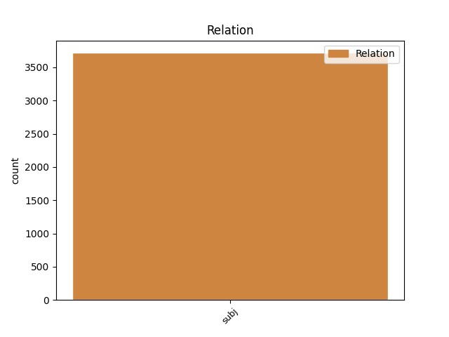
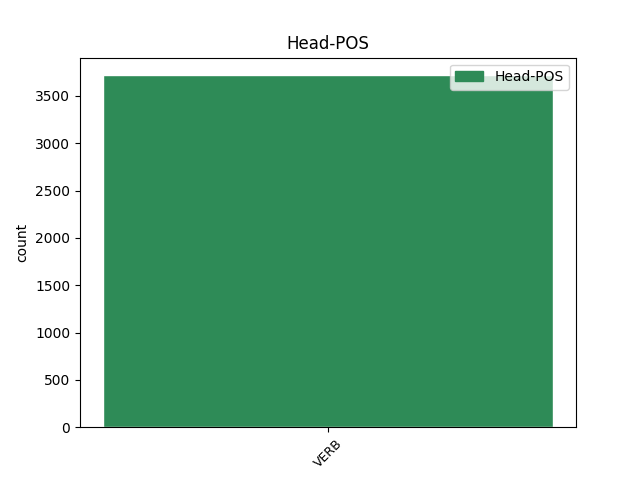
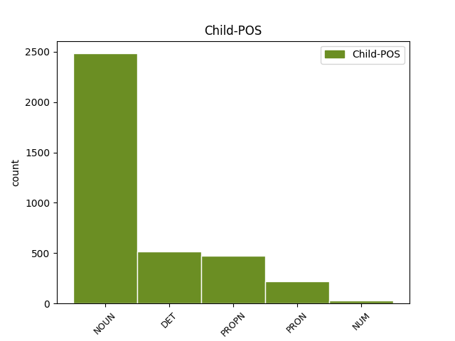

Distribution of features within this leaf



Agreement Rules sorted by frequency.
- When the dependent token is the subject(subj) of the head token, and the head token is VERB and the dependent token is NOUN.
1 Když _ _ _ _ 0 _ _ _
2 oslava _ _ _ _ 0 _ _ _
3 skončila _ _ _ _ 0 _ _ _
4 a _ _ _ _ 0 _ _ _
5 s _ _ _ _ 0 _ _ _
6 nadcházejícím _ _ _ _ 0 _ _ _
7 víkendem _ _ _ _ 0 _ _ _
8 se _ _ _ _ 0 _ _ _
9 budova _ _ _ _ 0 _ _ _
10 vyprázdnila _ _ _ _ 0 _ _ _
11 , _ _ _ _ 0 _ _ _
12 vyndal vyndat VERB VpMS----R-AA--- Animacy=Anim|Gender=Masc|Number=Sing|Polarity=Pos|Tense=Past|VerbForm=Part|Voice=Act 0 _ _ _
13 otec otec NOUN NNMS1-----A---- Animacy=Anim|Case=Nom|Gender=Masc|Number=Sing|Polarity=Pos 12 subj _ _
14 ze _ _ _ _ 0 _ _ _
15 svého _ _ _ _ 0 _ _ _
16 svazku _ _ _ _ 0 _ _ _
17 jeden _ _ _ _ 0 _ _ _
18 nenápadný _ _ _ _ 0 _ _ _
19 klíček _ _ _ _ 0 _ _ _
20 a _ _ _ _ 0 _ _ _
21 řekl _ _ _ _ 0 _ _ _
22 : _ _ _ _ 0 _ _ _
1 Slyšel _ _ _ _ 0 _ _ _
2 jsem _ _ _ _ 0 _ _ _
3 tak _ _ _ _ 0 _ _ _
4 uvnitř _ _ _ _ 0 _ _ _
5 jeho _ _ _ _ 0 _ _ _
6 ženu _ _ _ _ 0 _ _ _
7 , _ _ _ _ 0 _ _ _
8 která který DET P4FS1---------- Case=Nom|Gender=Fem|Number=Sing|PronType=Int,Rel 10 subj _ _
9 vevnitř _ _ _ _ 0 _ _ _
10 poklízela poklízet VERB VpFS----R-AA--- Gender=Fem|Number=Sing|Polarity=Pos|Tense=Past|VerbForm=Part|Voice=Act 0 _ _ _
11 , _ _ _ _ 0 _ _ _
12 jak _ _ _ _ 0 _ _ _
13 na _ _ _ _ 0 _ _ _
14 něj _ _ _ _ 0 _ _ _
15 zavolala _ _ _ _ 0 _ _ _
16 nějakou _ _ _ _ 0 _ _ _
17 částku _ _ _ _ 0 _ _ _
18 . _ _ _ _ 0 _ _ _
1 Cadik Cadik PROPN NNMS1-----A---- Animacy=Anim|Case=Nom|Gender=Masc|NameType=Giv|Number=Sing|Polarity=Pos 7 subj _ _
2 rabi _ _ _ _ 0 _ _ _
3 Elimelech _ _ _ _ 0 _ _ _
4 z _ _ _ _ 0 _ _ _
5 Lyžeňska _ _ _ _ 0 _ _ _
6 jednou _ _ _ _ 0 _ _ _
7 řekl říci VERB VpMS----R-AA--- Animacy=Anim|Gender=Masc|Number=Sing|Polarity=Pos|Tense=Past|VerbForm=Part|Voice=Act 0 _ _ _
8 svým _ _ _ _ 0 _ _ _
9 žákům _ _ _ _ 0 _ _ _
10 : _ _ _ _ 0 _ _ _
1 Zdálo _ _ _ _ 0 _ _ _
2 se _ _ _ _ 0 _ _ _
3 , _ _ _ _ 0 _ _ _
4 že _ _ _ _ 0 _ _ _
5 ve _ _ _ _ 0 _ _ _
6 vesnici _ _ _ _ 0 _ _ _
7 hluk _ _ _ _ 0 _ _ _
8 nikdo nikdo PRON PWM-1---------- Animacy=Anim|Case=Nom|Gender=Masc|PronType=Neg 9 subj _ _
9 nezaznamenal zaznamenat VERB VpMS----R-NA--- Animacy=Anim|Gender=Masc|Number=Sing|Polarity=Neg|Tense=Past|VerbForm=Part|Voice=Act 0 _ _ _
10 . _ _ _ _ 0 _ _ _
1 " _ _ _ _ 0 _ _ _
2 Jeden jeden NUM ClMS1---------- Animacy=Anim|Case=Nom|Gender=Masc|Number=Sing|NumForm=Word|NumType=Card|NumValue=1,2,3 7 subj _ _
3 z _ _ _ _ 0 _ _ _
4 tvých _ _ _ _ 0 _ _ _
5 příbuzných _ _ _ _ 0 _ _ _
6 se _ _ _ _ 0 _ _ _
7 skácel skácet VERB VpMS----R-AA--- Animacy=Anim|Gender=Masc|Number=Sing|Polarity=Pos|Tense=Past|VerbForm=Part|Voice=Act 0 _ _ _
8 mrtev _ _ _ _ 0 _ _ _
9 k _ _ _ _ 0 _ _ _
10 zemi _ _ _ _ 0 _ _ _
11 , _ _ _ _ 0 _ _ _
12 když _ _ _ _ 0 _ _ _
13 jsem _ _ _ _ 0 _ _ _
14 mluvil _ _ _ _ 0 _ _ _
15 o _ _ _ _ 0 _ _ _
16 tobě _ _ _ _ 0 _ _ _
17 a _ _ _ _ 0 _ _ _
18 o _ _ _ _ 0 _ _ _
19 tvém _ _ _ _ 0 _ _ _
20 životě _ _ _ _ 0 _ _ _
21 u _ _ _ _ 0 _ _ _
22 mě _ _ _ _ 0 _ _ _
23 . _ _ _ _ 0 _ _ _
Disagree Examples:
1 Od _ _ _ _ 0 _ _ _
2 dětí _ _ _ _ 0 _ _ _
3 , _ _ _ _ 0 _ _ _
4 kterým _ _ _ _ 0 _ _ _
5 tehdy _ _ _ _ 0 _ _ _
6 bylo _ _ _ _ 0 _ _ _
7 - _ _ _ _ 0 _ _ _
8 jednomu _ _ _ _ 0 _ _ _
9 čtrnáct _ _ _ _ 0 _ _ _
10 , _ _ _ _ 0 _ _ _
11 druhému _ _ _ _ 0 _ _ _
12 šestnáct _ _ _ _ 0 _ _ _
13 a _ _ _ _ 0 _ _ _
14 třetímu _ _ _ _ 0 _ _ _
15 sedmnáct _ _ _ _ 0 _ _ _
16 , _ _ _ _ 0 _ _ _
17 od _ _ _ _ 0 _ _ _
18 každého _ _ _ _ 0 _ _ _
19 bylo být VERB VpNS----R-AA--- Gender=Neut|Number=Sing|Polarity=Pos|Tense=Past|VerbForm=Part|Voice=Act 0 _ _ _
20 v _ _ _ _ 0 _ _ _
21 tom _ _ _ _ 0 _ _ _
22 svazku _ _ _ _ 0 _ _ _
23 několik _ _ _ _ 0 _ _ _
24 dopisů dopis NOUN NNIP2-----A---- Animacy=Inan|Case=Gen|Gender=Masc|Number=Plur|Polarity=Pos 19 subj _ _
25 a _ _ _ _ 0 _ _ _
26 byly _ _ _ _ 0 _ _ _
27 to _ _ _ _ 0 _ _ _
28 poslední _ _ _ _ 0 _ _ _
29 dopisy _ _ _ _ 0 _ _ _
30 , _ _ _ _ 0 _ _ _
31 které _ _ _ _ 0 _ _ _
32 kdy _ _ _ _ 0 _ _ _
33 matce _ _ _ _ 0 _ _ _
34 poslaly _ _ _ _ 0 _ _ _
35 . _ _ _ _ 0 _ _ _
1 A _ _ _ _ 0 _ _ _
2 že _ _ _ _ 0 _ _ _
3 bylo být VERB VpNS----R-AA--- Gender=Neut|Number=Sing|Polarity=Pos|Tense=Past|VerbForm=Part|Voice=Act 0 _ _ _
4 těch ten DET PDMP2---------- Animacy=Anim|Case=Gen|Gender=Masc|Number=Plur|PronType=Dem 3 subj _ SpaceAfter=No
5 , _ _ _ _ 0 _ _ _
6 co _ _ _ _ 0 _ _ _
7 mi _ _ _ _ 0 _ _ _
8 říkali _ _ _ _ 0 _ _ _
9 , _ _ _ _ 0 _ _ _
10 že _ _ _ _ 0 _ _ _
11 mě _ _ _ _ 0 _ _ _
12 milují _ _ _ _ 0 _ _ _
13 , _ _ _ _ 0 _ _ _
14 od _ _ _ _ 0 _ _ _
15 té _ _ _ _ 0 _ _ _
16 doby _ _ _ _ 0 _ _ _
17 hodně _ _ _ _ 0 _ _ _
18 . _ _ _ _ 0 _ _ _
1 Bylo být VERB VpNS----R-AA--- Gender=Neut|Number=Sing|Polarity=Pos|Tense=Past|VerbForm=Part|Voice=Act 0 _ _ _
2 tu _ _ _ _ 0 _ _ _
3 pár _ _ _ _ 0 _ _ _
4 spolužáků spolužák NOUN NNMP2-----A---- Animacy=Anim|Case=Gen|Gender=Masc|Number=Plur|Polarity=Pos 1 subj _ _
5 z _ _ _ _ 0 _ _ _
6 univerzity _ _ _ _ 0 _ _ _
7 a _ _ _ _ 0 _ _ _
8 navíc _ _ _ _ 0 _ _ _
9 stará _ _ _ _ 0 _ _ _
10 dáma _ _ _ _ 0 _ _ _
11 , _ _ _ _ 0 _ _ _
12 jeho _ _ _ _ 0 _ _ _
13 prateta _ _ _ _ 0 _ _ _
14 . _ _ _ _ 0 _ _ _
1 Aby _ _ _ _ 0 _ _ _
2 by _ _ _ _ 0 _ _ _
3 se _ _ _ _ 0 _ _ _
4 rybářům _ _ _ _ 0 _ _ _
5 usnadnila _ _ _ _ 0 _ _ _
6 práce _ _ _ _ 0 _ _ _
7 , _ _ _ _ 0 _ _ _
8 dělávalo _ _ _ _ 0 _ _ _
9 se _ _ _ _ 0 _ _ _
10 ledaco _ _ _ _ 0 _ _ _
11 : _ _ _ _ 0 _ _ _
12 na _ _ _ _ 0 _ _ _
13 pobřeží _ _ _ _ 0 _ _ _
14 se _ _ _ _ 0 _ _ _
15 zapalovaly _ _ _ _ 0 _ _ _
16 ohně _ _ _ _ 0 _ _ _
17 pro _ _ _ _ 0 _ _ _
18 navigaci _ _ _ _ 0 _ _ _
19 , _ _ _ _ 0 _ _ _
20 zpravidla _ _ _ _ 0 _ _ _
21 jezdívalo jezdívat VERB VpNS----R-AA--- Gender=Neut|Number=Sing|Polarity=Pos|Tense=Past|VerbForm=Part|Voice=Act 0 _ _ _
22 několik _ _ _ _ 0 _ _ _
23 člunů člun NOUN NNIP2-----A---- Animacy=Inan|Case=Gen|Gender=Masc|Number=Plur|Polarity=Pos 21 subj _ _
24 současně _ _ _ _ 0 _ _ _
25 , _ _ _ _ 0 _ _ _
26 aby _ _ _ _ 0 _ _ _
27 by _ _ _ _ 0 _ _ _
28 se _ _ _ _ 0 _ _ _
29 mohly _ _ _ _ 0 _ _ _
30 podporovat _ _ _ _ 0 _ _ _
31 . _ _ _ _ 0 _ _ _
1 Celý _ _ _ _ 0 _ _ _
2 vesmír vesmír NOUN NNIS1-----A---- Animacy=Inan|Case=Nom|Gender=Masc|Number=Sing|Polarity=Pos 8 subj _ SpaceAfter=No
3 , _ _ _ _ 0 _ _ _
4 všechny _ _ _ _ 0 _ _ _
5 pozemské _ _ _ _ 0 _ _ _
6 cesty _ _ _ _ 0 _ _ _
7 se _ _ _ _ 0 _ _ _
8 vešly vejít VERB VpFP----R-AA--- Gender=Fem|Number=Plur|Polarity=Pos|Tense=Past|VerbForm=Part|Voice=Act 0 _ _ _
9 do _ _ _ _ 0 _ _ _
10 těch _ _ _ _ 0 _ _ _
11 schodů _ _ _ _ 0 _ _ _
12 . _ _ _ _ 0 _ _ _